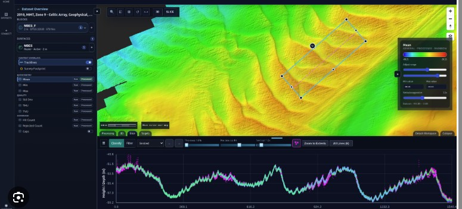
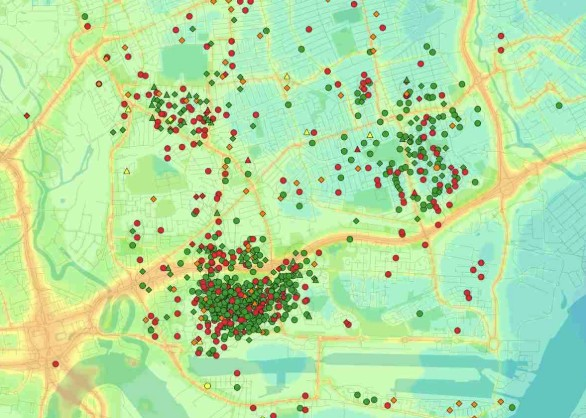

Hydrographic processing
Multibeam bathymetry, side-scan sonar and backscatter, from raw soundings to cleaned surfaces.
57.71° N · 11.97° E — Gothenburg, Sweden
Hydrographic Data Processor & Geomatics Engineer
I turn raw multibeam, backscatter and survey data into accurate seabed models, nautical charts and GIS products for offshore and marine projects.
About
I am a Geomatics Engineer with a Master's degree in Geomatics from Lund University. My work covers hydrographic surveying, marine geospatial data processing, GIS analysis, cartography and offshore survey operations.
What I enjoy most is taking complex survey data and making it trustworthy: cleaning soundings, checking quality against specification, and delivering geospatial information that marine, environmental and energy projects can rely on.
Experience
Feb 2025 – Present
Ocean Infinity AB · Gothenburg
Mar 2021 – Mar 2025
Swedish Maritime Administration
Apr – Oct 2017
Älvstranden Utveckling AB · Gothenburg
Jan 2009 – Jun 2013
Rwanda Mines, Petroleum and Gas Board · Kigali
Expertise
Multibeam bathymetry, side-scan sonar and backscatter, from raw soundings to cleaned surfaces.
Spatial analysis, geographic databases and map production, including nautical charts.
Quality control, validation and scripting to make geospatial workflows repeatable.
Work




Places connected to my education and career, from Kigali to the Swedish west coast.
Contact
Open to conversations about hydrographic processing, GIS and marine geospatial projects.